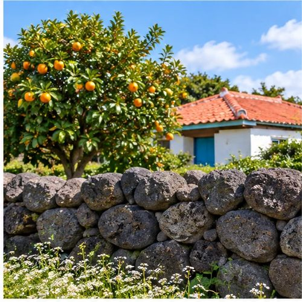
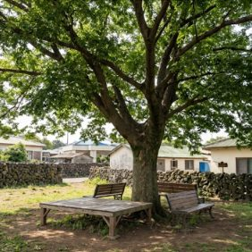
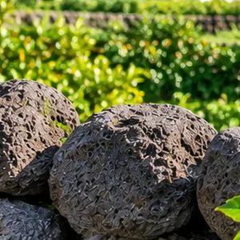
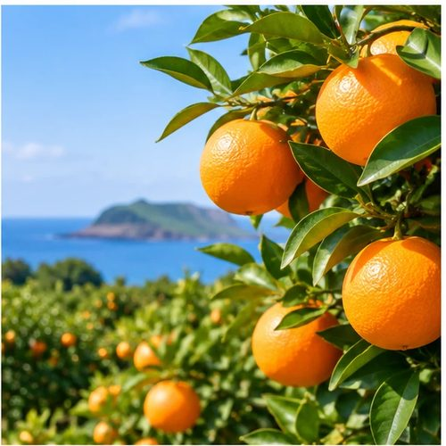
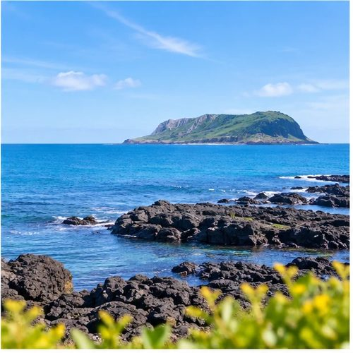
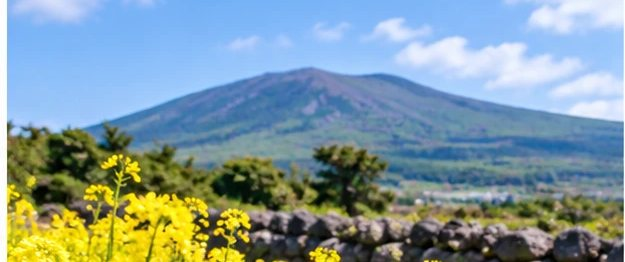

돌담 따라, 귤밭 따라 — 우리 동네 한 바퀴
매월 둘째 토요일 오전 9시 다음 걷기 12월 12일(토)
마을회관에서 출발해 한 바퀴 돌아 다시 마을회관으로

마을회관출발출발 도장 찍고 물 챙기기

팽나무 쉼터0.8km오래된 팽나무 그늘에서 첫 쉼

돌담 골목1.9km구불구불 검은 돌담, 사진 찍기 좋은 곳

감귤밭 전망대3.2km11월엔 노랗게 익은 귤밭이 한눈에

용천수 빨래터4.3km옛날 마을 사람들이 빨래하던 샘물
도착 도장 받고 따뜻한 차 한 잔

11월 제주 바람은 생각보다 셉니다
처음 오는 분께 한마디
빨리 걷는 모임이 아니에요. 사진 찍고, 귤밭 구경하고, 쉼터마다 쉬어 갑니다. 혼자 오셔도 괜찮아요.